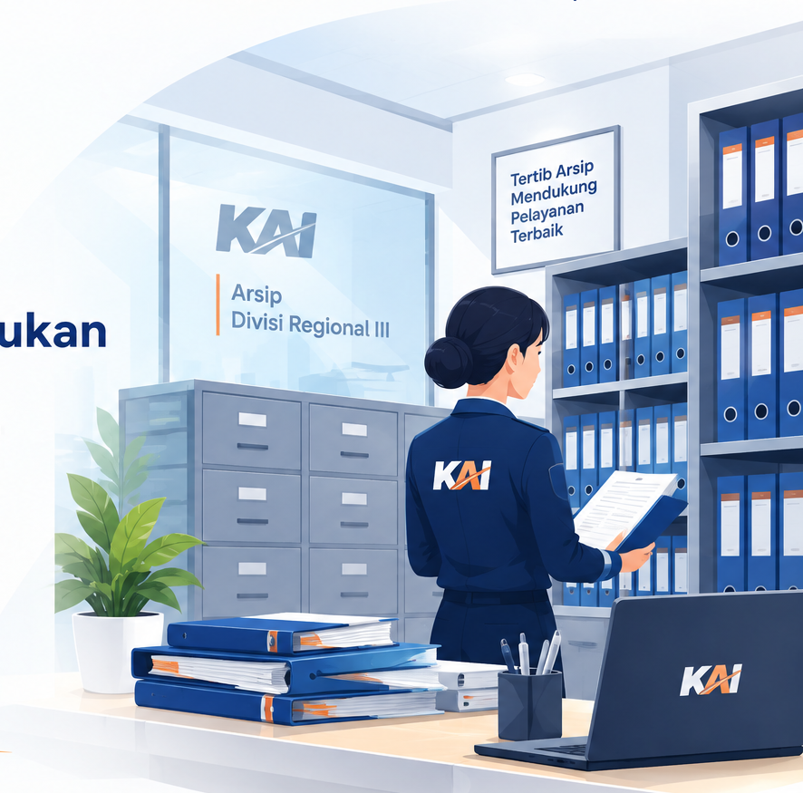

4
0
4Halaman Tidak Ditemukan
Maaf, halaman yang Anda cari tidak tersedia atau telah dipindahkan. Silakan kembali ke beranda atau gunakan menu navigasi untuk menemukan dokumen yang Anda tuju.
Pencarian Arsip
Pastikan nomor referensi berkas atau ID Surat Perintah Kerja (SPK) yang Anda masukkan sudah benar.
